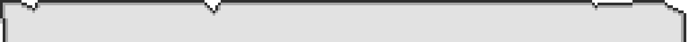
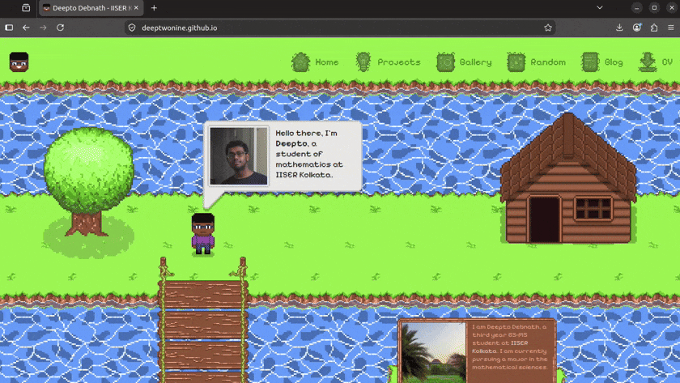
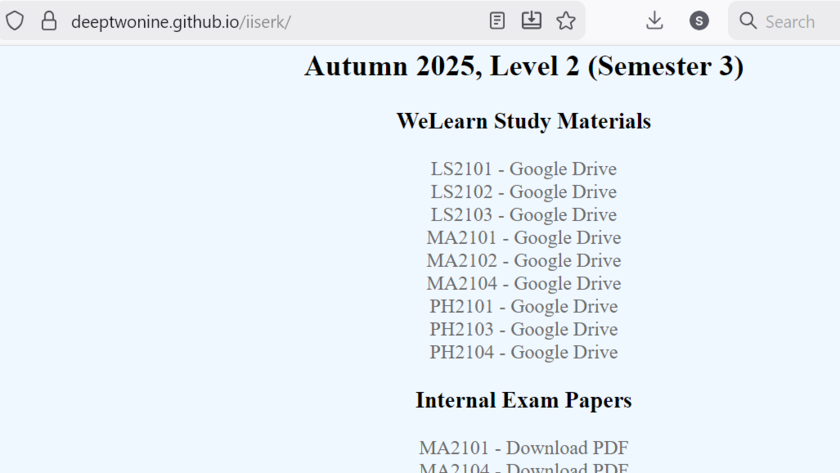
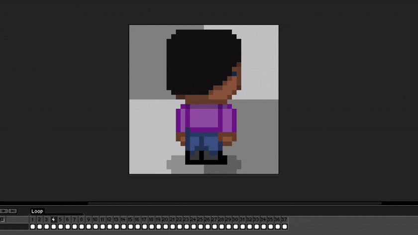
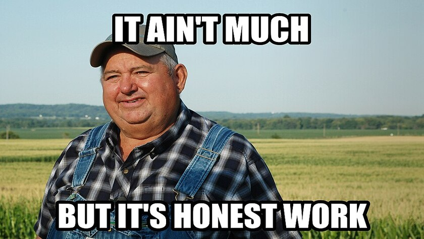

The Making of This Website
by Deepto Debnath • 14th August 2026A little bit about the work that went into this new website, what was, what is, and what will be...

Fig 1: The current look of the home page. I love it.Having a personal website as a college student is almost completely useless (unless you have study materials for juniors or batchmates to access), but hey, it's still cool to have one as a personal project, right?
The Origin
The first version (or precursor) to my website was a Jekyll page created in 2022 for my APOD Viewer project. It was (is) an Android app to display NASA APODs on your phone, and at that time I was really proud of it, so I put up a website for it. Unfortunately, no pictures or other evidence for that website survive.I didn't write that website in HTML myself; it was a Markdown file which Jekyll would automatically convert into a decent looking website on GitHub Pages. Jekyll plus GitHub Pages is an excellent first resource for someone looking to make their website, by the way.
Writing My Own

Fig 2: A snapshot of my previous website. Looks like plain old HTML. The CSS applied header and footer are, unfortunately, absent from this picture.My first foray into making my website using self-written HTML was in my first year of college (2024 - 2025). I was undeniably encouraged in this regard by the websites of seniors like this guy and this guy, even though what I built was nowhere close to looking as good as their websites.
I still was really proud of it though. It was initially peach themed, but I changed it to grey on my friends' suggestions. It looked decent again, but certainly very barebones. But it was still a really useful website as it had study materials from my classes at IISER Kolkata, and was of great use to juniors (and some batchmates).
Until it didn't, because of copyright issues, you might say. But anyway, it had helped enough people by the time it was gone.
First Sparks Of Change
 Fig 3: Curl, my first try at some pixel art.
Fig 3: Curl, my first try at some pixel art.
My first idea of designing my website with pixel art elements (with a rather fabulously imagined light and dark mode switcher) came during my work on Curl. As a result, I started learning some pixel art on YouTube, and even began with making icons for a redesigned website. However, I soon stopped, and even deleted everything I made in frustration, as I had my coursework to tend to.
Construction Finally Begins
 Fig 4: First steps towards the new homepage. The previous website's content is still visible.
Fig 4: First steps towards the new homepage. The previous website's content is still visible.
I finally started working on a new website this June, during the summer vacations. Studying ODEs at NISER was no fun, and boredom got to me, so I decided to restart working on my website.

Fig 5: Work on my character. Was very happy about this, even though the character doesn't really have much character, so to speak.The first animations got me really excited, and acted as a virtuous cycle where the better my website looked, the more excited I was to work on it. I would almost ignore my summer project to work on my website instead,
The HTML and CSS (and some JS) was mostly doable but some parts of it really rattled me, and I'll admit that I had delegated such tasks to my dearest Gemini (does that mean this website is vibe-coded?). In spite of my open aversion to AI, my summer project professor (partly) convinced me that it can come in handy sometimes.
Eventually, I completed all of my website apart from the blog and notes (where?!) pages before the beginning of the new semester.
Finishing Touches
I had initially thought of making a new notes page as well, and to avoid plagiarism by getting readymade PDFs from professors' study materials using, well, AI. This was a plan I eventually dropped because it turned out to be too much work. AI just ain't there yet, man. And anyway, the idea began to feel a bit dodgy. Eventually, inspired by this guy's website, I decided to replace notes with projects instead.
And then what remained was to update my CV, and to start blogging. That's it. That's done now.
What's To Come
Even I don't really know, but I've got plans.Firstly, I'd like to start blogging regularly, even though it's kind of obvious I'm no longer gonna get any visitors. The main nectar that would once attract the bees is now gone, perhaps for good, but if people don't enjoy the random stuff on my website enough to keep coming back, then there's not much pulling them back here.
Secondly, JS based minigames for the random tab is something I want to make as a fun side project, but I really don't have any idea when that'll actually come up.
Thirdly, maybe a dark mode for this website. A really big maybe right there.
Fourthly, to add comments to this blog. But that's not really a requirement, since I don't think I'll get many readers anyway.
Lastly, math. Having chosen math as my majoring subject after a lot of dilemma, I really need to grind it out, or just fail instead. I haven't done any math this semester, so maybe this is the time to lock in. A maybe is always big.
The End
If you really read it till here, thank you very much.Any comments would be much appreciated, just email them here. Good night!